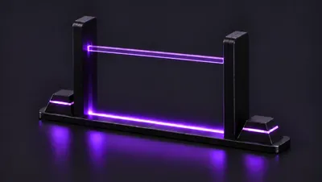

2030 MYEONGDONG
A CITY THAT RESPONDS.
01THE FUTURE OF URBAN MOBILITY
02EVERY SECOND ACCELERATES
01 — CONCEPT
THE CITY RESPONDS
BEFORE YOU DO.
도시가 먼저 반응합니다.
02 — PROBLEM · 01
MORE PEOPLE.
2030년, 더 많은 사람이 모이는 명동.
02 — PROBLEM · 02
LESS SPACE.
밀집된 인파와 좁은 골목, 복잡한 교차로.
02 — PROBLEM · 03
WHEN EVERYSECOND MATTERS.
긴급 차량이 진입해야 하는 순간, 사람들로 인해 통행이 지연됩니다.
MYEONGDONG · 2030 · 21:40
평소에는 자유롭게 흐르던 거리.
긴급 상황, 동선이 겹치며 멈춰 섭니다.
03 — CONCEPT
THE CITYRESPONDS FIRST.
긴급 상황을 인식하고, 통행 공간을 스스로 확보하다.
04 — SOLUTION
A PATH WHEN
IT MATTERS.
평소에는 바닥에 숨겨지고, 긴급 상황에는 통행을 유도합니다.
05 — PRODUCT REVEAL · CLOSED
INVISIBLE IN
DAILY LIFE.
평상시에는 바닥과 일체화되어 보행 흐름을 방해하지 않습니다.
05 — PRODUCT REVEAL · READY
READY WHEN
NEEDED.
긴급 차량 접근이 감지되면 통행 공간을 확보하기 위해 전개됩니다.
05 — PRODUCT REVEAL · RESPONSE
A PATH THAT
RESPONDS.
도시의 상황에 반응하여 긴급 이동 경로를 형성합니다.
HOW IT WORKS
- 01 — DETECTAI와 센서 시스템이 긴급 차량의 접근을 감지합니다.
- 02 — DEPLOY바닥의 장치가 단계적으로 상승하며 통행 경계를 형성합니다.
- 03 — GUIDE보라색 LED가 보행자의 이동 방향을 유도하고 통로를 확보합니다.
- 04 — RESTORE긴급 차량 통과 후 원래의 닫힌 상태로 복귀합니다.
06 — INSTALLATION
NOT ONE.
A CONNECTED SYSTEM.
하나가 아닌, 연결된 통행 시스템
골목의 진행 방향을 따라, 통행로 양쪽에 한 줄씩.
두 줄 사이, 구급차가 지나갈 충분한 폭을 남깁니다.
- 01STANDBY
- 02DETECTION
- 03EARLY WARNING
- 04SIDE PANEL
- 05BARRIER
- 06PASSAGE
- 07RESTORATION
STEP 01 — STANDBY
평상시, 도시의 일부가 되다.
완전히 접힌 상태로 바닥에 낮게 놓여 보행을 방해하지 않습니다.
STEP 02 — DETECTION
AI가 긴급 차량의 접근을 인식합니다.
연결된 모든 장치가 동시에 활성화됩니다.
STEP 03 — EARLY WARNING
양끝의 경고 모듈이 먼저 상승합니다.
퍼플 LED가 밝아지며 주변 보행자에게 알립니다.
STEP 04 — SIDE PANEL
양쪽 패널이 힌지를 따라 상승합니다.
무게감 있는 기계적 움직임으로 수직 기둥이 됩니다.
STEP 05 — TRANSPARENT BARRIER
얇은 투명 패널이 위로 전개됩니다.
두 기둥 사이에 투명판이 연결되고 하단 LED가 점등됩니다.
STEP 06 — EMERGENCY PASSAGE
두 줄의 경계 사이로 구급차가 통과합니다.
보행자는 경계 밖으로 이동하고 통로가 확보됩니다.
STEP 07 — RESTORATION
다시 도시 속으로.
투명판 → 패널 → LED → 경고 모듈 순으로 복귀합니다.
07 — INTERACTIVE VIEWER
TAKE A
CLOSER LOOK.
CLOSED STATE
CLEAR THE WAY.
SAVE THE MOMENT.
도시가 먼저 길을 열다.
2030 MYEONGDONG
FUTURE EMERGENCY PATH

이 브라우저에서는 3D(WebGL)를 표시할 수 없습니다.